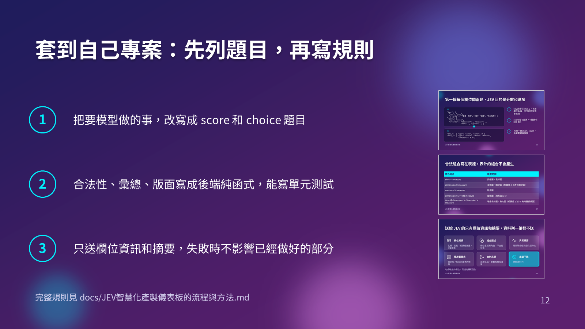

python-pptx 和 OfficeCLI 做同一份簡報
同一份規格和文案，各交給一個全新的 agent，再用 PowerPoint 交叉驗證
兩份成品幾乎一樣：12 頁、6 種轉場、約 180 個動畫效果。python-pptx 用的 token 少 28%，製作時間少一半。OfficeCLI 多了 SVG、slide zoom 和內建檢查，但動畫的 presetID 有 bug，要用 raw-set 修。
結論
怎麼選
- 要快、要常改、要精準控制動畫：選 python-pptx。這次寫好的動畫和轉場已經收進 ppt-master 的 pptx_fx.py，下次不用再寫。
- 要放 SVG、要 slide zoom、不想碰 OOXML：選 OfficeCLI。做完一定要用
-Anim檢查 presetID。 - 動畫方向事後用 PowerPoint 存出的 XML 對照過。python-pptx 版的 wipe 原本整組反向，已經修正；OfficeCLI 版用 raw-set 修過的方向正確。
Token 與時間
| 項目 | token | 工具呼叫 | 時間 |
|---|---|---|---|
| 共用前置（主對話） | 約 30.5 萬 | ||
| humanizer-zh 子 agent（簡報文案） | 100,515 | 13 | 5 分 |
| python-pptx 製作 | 275,134 | 68 | 33 分 |
| OfficeCLI 製作 | 383,560 | 115 | 68 分 |
| humanizer-zh 子 agent（這份報告） | 97,018 | 13 | 4 分 |
| 收尾：交叉驗證、報告、commit（主對話） | 約 7 萬 |
子 agent 的數字來自 harness 的完成通知。主對話的數字是 session 計數器前後相減，中途續接過一次，所以是估計值。
為什麼 OfficeCLI 比較貴
- 要學的比較多。officecli 的 skill 文件兩份約 9 萬字元，模型對 python-pptx 和 OOXML 本來就熟。
- 每個操作都是一個 CLI 指令，工具呼叫多了七成。
- 動畫 bug 要逐一查 XML、用 raw-set 修，驗收多跑一輪。
- 跑一次 167 秒，python-pptx 只要 0.9 秒，每輪修改都要等。
產出指標
| 指標 | python-pptx | OfficeCLI |
|---|---|---|
| 腳本行數 | 664 | 605 |
| 跑一次 | 0.9 秒（第一次轉 icon 要 33.5 秒） | 167 秒（截 zoom 縮圖佔 75 秒） |
| 驗收修正 | 2 輪 | 3 輪 |
| 檔案大小 | 125 KB | 672 KB |
| 動畫效果總數 | 179 | 180 |
功能對照
| 功能 | python-pptx | OfficeCLI |
|---|---|---|
| 漸層背景 | 原生 | 原生 |
| 玻璃卡（透明填色、透明外框、陰影、光暈） | 外框透明要手寫，還要拔掉 p:style | 全部是原生屬性 |
| 文字陰影、文字光暈 | 手寫 rPr 的 effectLst | 原生，自動寫到 run |
| morph 轉場 | 手寫 mc:AlternateContent | 原生 transition=morph-1200 |
| 其他 5 種轉場 | 每種手寫 1 行 | 原生，可選 60 多種 |
| 進場、強調、退場動畫 | 自寫時間樹約 85 行，每種效果 2～8 行 | 原生，但 5 種 presetID 寫錯 |
| 自訂路徑動畫 | 手寫 8 行 | 原生，presetID 要改 |
| 圖表逐類別出現 | 手寫 graphicEl 和 bldChart | 原生，但每個類別都要點一次 |
| 連接線、圖片、表格掛動畫 | 同一套手寫機制 | 不支援，要先掛在暫時的形狀再改目標 |
| 連接線綁在形狀上 | 六角形的連接點要自己算 | from、to 加 fromSide |
| SVG icon | 只能放 PNG，用 Chrome 轉檔 | 原生 svgBlip，但 PNG 後備圖是空白 |
| 跳頁超連結 | 原生 click_action | 每個 run 也被寫一份，字變藍 |
| slide zoom | 做不到，改成連結卡 | 原生，但縮圖空白，要用 view screenshot 補 |
| 中文避頭尾 | 要自己設 lang=zh-TW | 一樣要設，表格儲存格設不了 |
| 內建檢查 | 沒有，靠 PowerPoint 匯出 | validate、view issues、view screenshot |
PowerPoint 交叉驗證
我用 PowerPoint 重新匯出兩份，列出每頁的轉場和動畫。8 頁完全一樣，差異只有這 4 處：
| 頁 | 項目 | python-pptx | OfficeCLI | 原因 |
|---|---|---|---|---|
| 1 | 效果數 | 5 | 4 | python-pptx 把 kicker 拆成獨立的 fade |
| 2 | 效果數 | 13 | 16 | OfficeCLI 讓卡片和卡內 3 段字一起 teeter |
| 8 | 效果數 | 9 | 8 | python-pptx 多一步圖表背景 |
| 9 | 轉場代碼 | 3073 | 3074 | 兩邊寫的 zoom 轉場不同，PowerPoint 分別認成 Box Out 和 Box In |
OfficeCLI 1.0.153 的 bug
- presetID 寫錯：wipe 寫成 20、zoom 21、split 15、float 12、自訂路徑 26。動畫窗格會顯示錯的名稱。
- wipe 不管設哪個方向，filter 一律寫
wipe(left)。 float實際是從投影片外飛進來的 Peek。- grow/shrink 固定放大 150%。
add animation只接受 shape 和 chart。link=會寫到每個 run，字變藍加底線。- slide zoom 的縮圖是空白圖。
- 8 碼色寫入是 AARRGGBB，glow 讀回卻是 RRGGBBAA。
- 設了 morph 的頁，相鄰頁的 shape 名稱都會多出
!!，@name=會找不到。 - mermaid 原生轉換不吃
<br/>，8 個節點會擠成一排。
python-pptx 的痛點
- 沒有動畫和轉場 API。時間樹、bldLst、grpId 的規則都要自己寫。
- 線條透明度、文字效果、表格框線都沒有 API。
- 自動形狀預設帶
p:style，每個都要拔掉，不然會吃到主題效果。 - 不能放 SVG，也不能產生投影片縮圖。
- 連接點只照外框算 4 個點，六角形要自己算。
第 12 頁：zoom 和替代方案
左邊是 python-pptx 做的連結卡。右邊是 OfficeCLI 的 slide zoom，縮圖是補上去的。python-pptx 版後來換了配色，所以兩張圖顏色不同。

10/06 後續
- 決定只留 python-pptx，ppt-master 拿掉 OfficeCLI 的說明。
- 動畫和轉場收進 pptx_fx.py，新增 animate()、fx()、transition()。reveal() 和 emphasize() 改走同一套引擎，兩個 demo 重新產生後，動畫跟原本一樣。
- 用 PowerPoint COM 建效果、存檔，再對照 XML，發現 wipe 濾鏡方向寫反了，已修正。
- JEV 的 python-pptx 版改用 MP072 配色（深藍加橘），build_pptx.py 從 664 行減到 506 行。PowerPoint 讀到的轉場和動畫跟重構前一樣。
檔案
- 規格
- docs/slides/brief.md
- 文案
- docs/slides/content.py
- icon
- docs/slides/assets/
- python-pptx
- build_pptx.py → JEV儀表板_python-pptx.pptx
- OfficeCLI
- JEV儀表板_officecli.pptx（建置腳本已刪）
- 工具筆記
- notes_python-pptx.md、notes_officecli.md
- 驗收截圖
- qa-python-pptx/、qa-officecli/